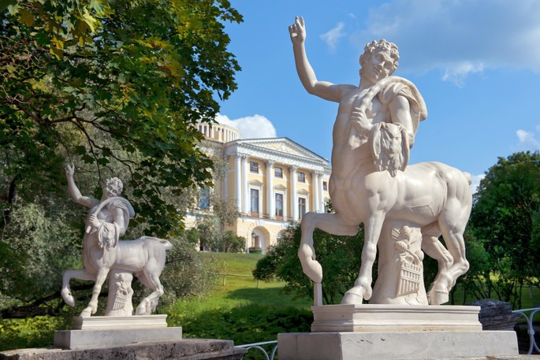
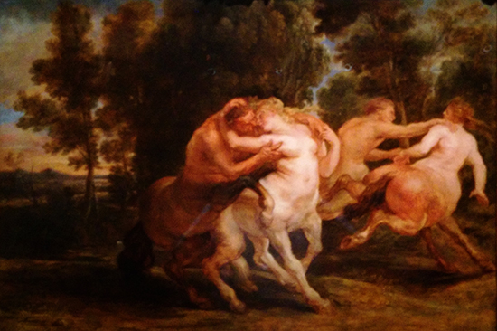

Na mitologia grega, os centauros eram a personificação das forças naturais desenfreadas, da devassidão e embriaguez.
Centauro era um animal fabuloso, metade homem e metade cavalo, que habitavam as planícies da Arcádia e da Tessália. Seu mito foi, possivelmente, inspirado nas tribos semi-selvagens que viviam nas zonas mais agrestes da Grécia.
Segundo a lenda, era filho de Ixíon, rei dos lápitas, e de Nefele, deusa das nuvens, ou então de Apolo e Hebe. Em ambos os casos parece clara a alusão às águas torrenciais e aos bosques.
A história mitológica dos centauros está quase sempre associada a episódios de barbárie. Convidados para o casamento de Pirítoo, rei dos lápitas, os centauros, enlouquecidos pelo vinho, tentaram raptar a noiva, desencadeando-se ali uma terrível batalha.
